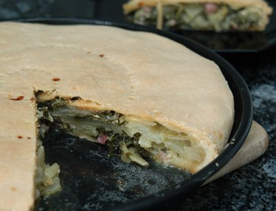

| Zutaten für 4 Personen: | |
| 300 g | Weissmehl |
| 60 g | Butter |
| Öl | |
| Salz | |
| 1 kg | Mangold |
| 150 g | Speckwürfeli oder Bauchfleisch |
| 2-3 Zehen | Knoblauch |
| 1 Bund | Petersilie |
| 1 | Ei |
| 70 g | geriebener Käse |
Der Mangold wird zuerst wie Spinat zubereitet - also gedünstet und anschliessend wird daraus die Füllung der Wähe bereitet: mit ein wenig Kochflüssigkeit, die vom Dünsten übrigbleibt, wird der Mangold leicht erwärmt, dann werden die Speckw&uuuml;rfel dazu gegeben und allmählich Knoblauch, Ei, Käse, Petersilie und ein EL Olivenöl eingearbeitet.
Zuletzt wird mit Salz abgeschmeckt.
Das Mehl wird mit 50gr flüssiger Butter, 2-3 El Olivenöl, ein wenig Salz und Wasser gerüstet, um einen nicht zu festen Teig zu erzielen.
Dann wird eine Form von 30-35 cm Durchmesser mit dem wenige mm dünn ausgerollten Teig überlappend ausgelegt. Für einen Deckel behält man einen Teil des ausgerollten Teigs übrig. Nach dem eingeben der Füllung wird diese damit zugedeckt und am Rand fest gepresst. Mit einer Gabel wird mehrmals eingestochen und im Ofen etwa 45-55 Minuten gebacken.
Topamahu@aol.com, 21.9.2000
Gruezi Richard,
beim Lesen einiger der von Dir offerierten Rezepte ist mir in Erinnerung gekommen, dass meine Urgroßtante Robert Walser auf einer seiner Wanderungen getroffen hat, als er abends auf den Bergen sass und Alphorn spielte. Sie haben sich dann unterhalten und neben Landschaftsbildern auch über gute Küche und Gletschereis gesprochen. Jahre danach hat Robert Walser meiner Tante ein Rezept geschrieben, das wir heute noch als kostbares Relikt bei uns gerahmt in der Küche hängen haben. Hier teile ich Dir´s mit.
Kommt aus Grossmutters Kochschublade und gehört auch klar dorthin. Früher gab es halt weniger Zutaten und daraus hat man dann gekocht was man konnte. Der Aufwand war beträchtlich dafür, dass dann ein einfaches Gericht dabei herauskommt. Die Speckwürfeli und der Käse sind ja das eigentlich schmackhafte hier (und ja, ich habe Krautstiele statt Mangold genommen). Heutzutage würde man wohl eher Blätterteig nehmen als den Teig selber zu basteln. Es schmeckt OK aber die grosse Sensation finde ich das nicht. RE 13.9.2009